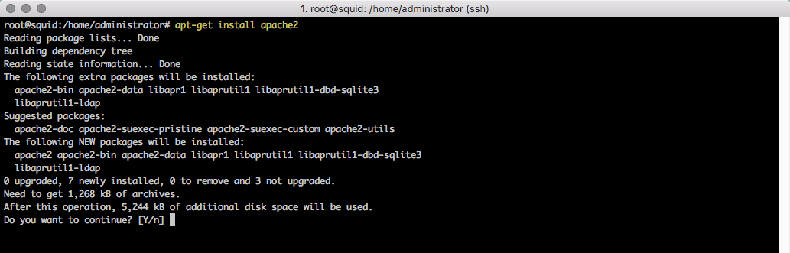
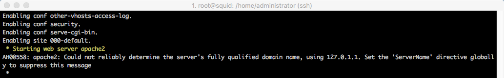
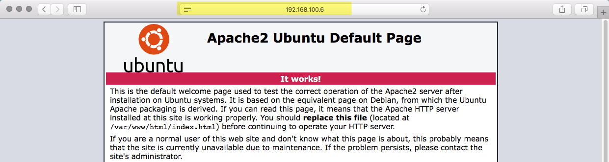
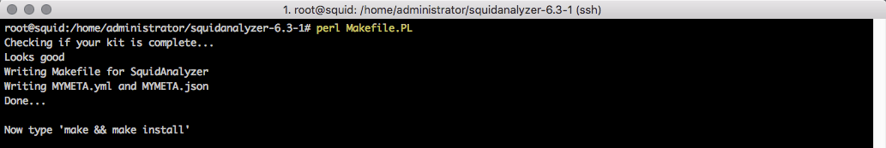
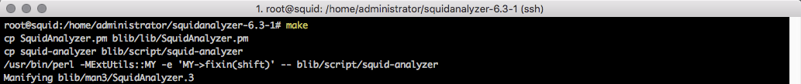
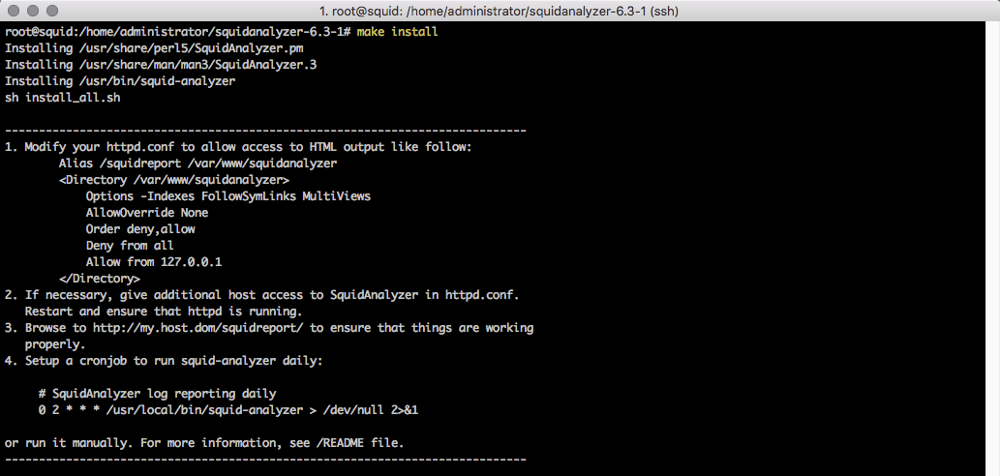
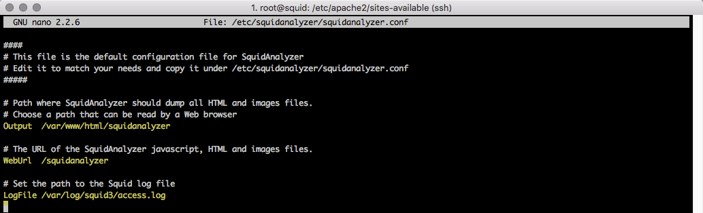
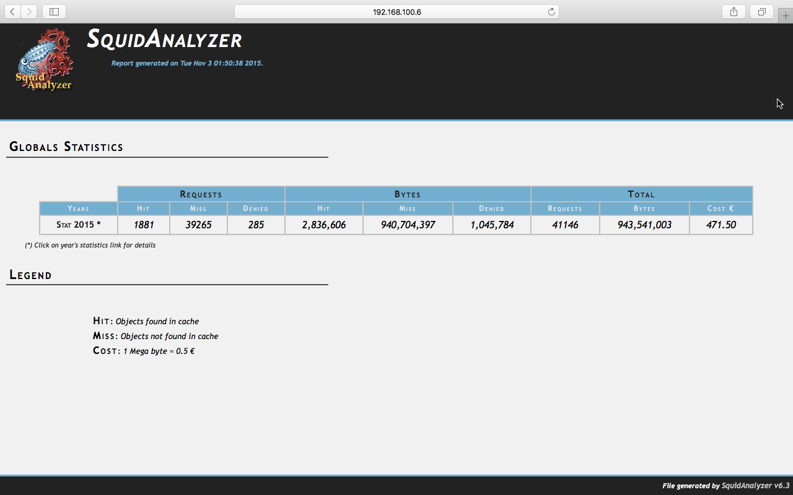

Instalar e configurar o SquidAnalyzer no Ubuntu Server
BlogCompartilhe esse post nas redes sociais...
Olá Homelabers!
No post anterior, realizamos a instalação e configuração do Squid Proxy. Agora chegou a hora de aprender como instalar e configurar o SquidAnalyzer, um software responsável por ler e formatar os logs do Squid de uma forma totalmente gráfica e intuitiva. É uma excelente ferramenta para que o administrador do Squid possa entender o que passa pelo seu proxy, quais são as URLs de maior acesso, usuários, etc.
Mais uma vez, assim como no post do Squid, o que você aprender aqui pode ser aplicado em seu ambiente de trabalho e não somente em seu HomeLab.
Os pré-requisitos para a instalação do Squid Analyzer são:
- Servidor Apache (ou Nginx)
- Perl
- Squid Proxy já instalado e configurado. Vamos fazer a instalação no mesmo servidor do Squid.
[su_note radius="0”]Atenção, todos os comandos desse post foram executados como root. Para isso basta digitar sudo su e colocar a sua senha.[/su_note]
Primeiramente vamos realizar a instalação do Apache executando o comando abaixo.
apt-get install apache2


Para confirmar a instalação, abra um browser e acesse o IP do seu servidor. A tela abaixo deverá aparecer.

O próximo passo é instalar o make. Execute o comando abaixo:
apt-get install make
Agora vamos fazer o download do Squid Analyzer. O comando abaixo irá baixar a última versão (6.3-1 na data de publicação desse post) do repositório. O arquivo é bem pequeno tem apenas 152Kb.
wget http://sourceforge.net/projects/squid-report/files/latest/download -O squidanalyzer.tar.gz
Descompate o arquivo baixado usando o comando:
tar zxvf squidanalyzer.tar.gz
Acesse o diretório e execute os comandos para realizar a instalação
cd squidanalyzer-6.3-1/
Pearl Makefile.PL
make
make install
  
Feito isso, chegou a hora de configurar o Apache:
Vamos mover a pasta do SquidAnalyzer para o local correto:
mv /var/www/squidanalyzer/ /var/www/html/squidanalyzer
O próximo passo é criar um Virtual Host no Apache para o SquidAnalyzer. Digite o comando abaixo para criar um novo arquivo:
nano /etc/apache2/sites-availabe/squidanalyzer.conf
Cole o texto abaixo
<VirtualHost *:80>
ServerAdmin webmaster@localhost
DocumentRoot /var/www/html/squidanalyzer
ErrorLog ${APACHE_LOG_DIR}/squidanalyzer-error.log
CustomLog ${APACHE_LOG_DIR}/squidanalyzer-access.log combined
Edite o arquivo squidanalyzer.conf e realize as alterações descritas abaixo:
nano /etc/squidanalyzer/squidanalyzer.conf
#alterar a linha Output de /var/www/squidanalyzer para /var/www/html/squidanalyzer
#alterar a linha WebUrl para /squidanalyzer
O arquivo deve ficar igual a figura:

Agora vamos fazer o restart do Apache para carregar as modificações
service apache2 restart
Execute o squidanalyzer:
/usr/local/bin/squid-analyzer -d
Aqui cabe uma explicação: O SquidAnalyzer apenas lê os logs de acesso do Squid quando executado.
Abra o browser e acesse a url http:///squidadnalyzer

Voialá… Sucesso. Agora os toques finais.
Vamos adicionar o squidanalyzer na crontab (agendador de tarefas do Linux) para que ele execute sozinho. Em nosso exemplo o SquidAnalyzer vai rodar a cada 5 minutos.
crontab -e
Cole as linhas abaixo no final do arquivo.
#executa o squidanalyzer a cada 5 minutos.
*/5 * * * * /usr/local/bin/squid-analyzer 2>&1 | /home/timestamp.sh >> /var/log/squidanalyzer-cron.log
Agora você deve explorar a interface do SquidAnalyzer, que é bastante simples e intuitiva.
Você poderá também explorar o arquivo de configurações do SquidAnalyzer (/etc/squidanalyzer/squidanalyzer.conf) para fazer modificações pertinentes ao seu ambiente. O arquivo está bem documentado. Mas lembre-se de fazer um backup antes.
É isso pessoal. Finalizamos mais um post. Espero que tenha sido útil a você.
Até o próximo post e não se esqueça de deixar o seu comentário no post, seguir o HomeLaber no Twitter (@Homelaber) e curtir a nossa página no Facebook (fb.com/homelaber) para ficar sempre atualizado das novidades do blog.
Compartilhe esse post nas redes sociais...Valdecir Carvalho
Nerd e pai orgulhoso da Mariana e João. Profissional Sênior de TI com foco em arquitetura de infraestrutura e cloud computing. Blogueiro, podcaster, palestrante, amante de comunidades técnicas, fotógrafo aposentado e adora jogos antigos.
#vExpert · #VMUGLeader · #VUGBrasil · #vBronwBagBrasil · #VeeamVanguard